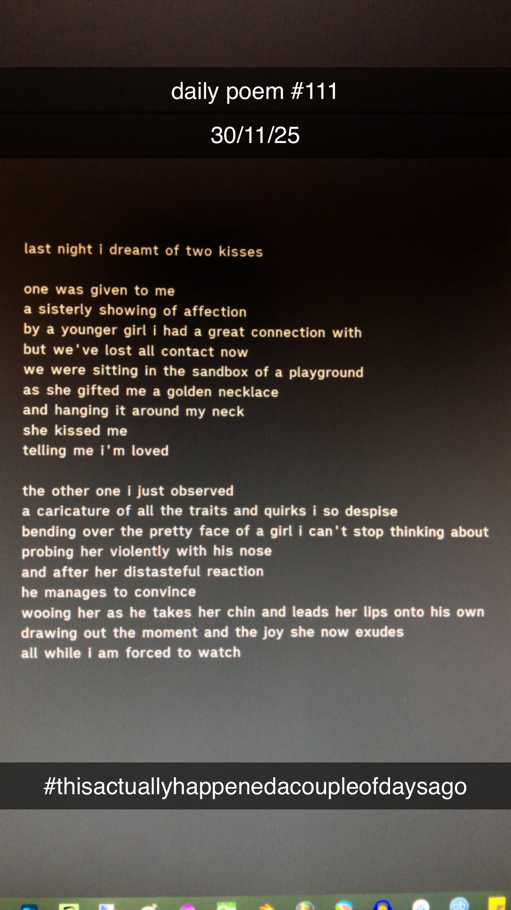

A Dream of Two Kisses
[111]Last night I dreamt of two kisses.
One was given to me –
A sisterly showing of affection
By a younger girl I had had a great connection with;
But we've lost all contact now.
We were sitting in the sandbox of a playground
As she gifted me a golden necklace –
And hanging it around my neck
She kissed me –
Telling me that I am loved.
The other one I just observed;
A caricature of all the traits and quirks I so despise
Bending over the pretty face of the girl I can't stop thinking about –
Probing her violently with his nose –
And after her distasteful reaction
He manages to convince,
Wooing her as he takes her chin and leads her lips onto his own –
Drawing out the moment, and the joy she now exudes.
All while I am forced to watch.
